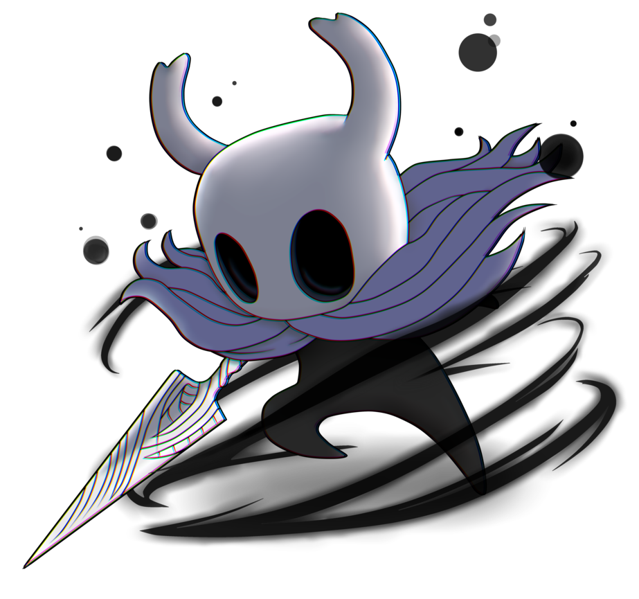

Hollow Knight — это мрачная и атмосферная метроидвания, созданная независимой студией Team Cherry. Действие игры разворачивается в подземном королевстве под названием Hallownest, когда-то процветавшем, но теперь погружённом в упадок из-за таинственной инфекции, уничтожающей разум его жителей. Игрок берёт на себя роль безмолвного Рыцаря, которому предстоит исследовать руины этого когда-то величественного места, сражаться с опасными врагами, боссами и раскрывать тайны древних существ и событий, которые привели к его падению. В центре лора игры находится конфликт между древним светлым существом, известным как Лучезарный (The Radiance), и Королём Пустоты (Pale King), который когда-то правил Hallownest. Лучезарный — это древнее божество, которому поклонялись жители королевства, пока не появился Король Пустоты, принесший порядок и просвещение своим подданным, заставив их забыть старого бога.

Чтобы удержать тёмные силы Лучезарного,Король создал существо — Пустого Рыцаря (Hollow Knight), который должен был стать сосудом для заточения этого божества. Однако эксперимент провалился, и Пустой Рыцарь не смог сдержать Лучезарного, в результате чего Инфекция вновь начала распространяться по королевству. Игрок, по мере прохождения игры, встречает множество персонажей, каждый из которых вносит свою лепту в понимание того, что произошло с Hallownest. Среди них такие важные фигуры, как Хорнет, которая наблюдает за действиями Рыцаря и пытается остановить его, и Мудрецы — древние существа, запечатавшие выходы из королевства в надежде сдержать заражение. Мир игры полон загадок и скрытых историй, которые игрок открывает через взаимодействие с окружением, диалоги с персонажами и битвы с могущественными боссами. Важно отметить, что Hollow Knight строит свою атмосферу через минималистичное повествование, где игроку самому нужно соединять фрагменты информации и строить картину того, что произошло. Восхождение и падение Hallownest является центральной темой игры, и по мере того как игрок продвигается всё глубже в запутанные туннели, он сталкивается с наследием Короля Пустоты, который, несмотря на все свои усилия, не смог предотвратить катастрофу. Hollow Knight удачно сочетает в себе исследование, сложные сражения и богатую историю, которая, будучи скрытой под поверхностью, требует от игрока внимательности и терпения.